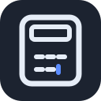

灵感接住。
琐事顺手。
截下重要的一幕，找回刚才的复制。
让那些小操作，跟得上你的想法。
屏幕助手截图、标注、录屏与贴图，在一个地方完成。
你的工具，各就各位。
随手打开，随心展开
同一个插件，跟着你的节奏。
临时查一查，或坐下来认真处理。
工具箱，继续生长
效率、开发、设计与媒体。
挑需要的，留下顺手的。
拖入多文件，查找替换 / 序号 / 日期 / 大小写 / 扩展名规则链实时预览，确认后批量改名，支持撤销。

科学计算、Ans 与内存寄存器、可收藏的本地计算历史。
管理 AI 应用的供应商配置、MCP 与会话，查看用量。
搜索文本、图片与文件历史；快捷回贴，桌面预览与批量整理。
粘贴代码生成高亮截图卡片：多语言着色、跟随主题配色、macOS 窗口栏样式，复制 / 保存 PNG / 2x 高清。
Base64、URL、Hex、Unicode、HTML 编解码与 JWT、URL 参数查看。
浏览 codex-pets.net 社区宠物画廊：搜索、排序、标签筛选与分页；逐帧 sprite 预览与光标跟随动效；一键安装宠物包到本机 Codex（自动检测 ~/.codex），并管理已安装宠物。
屏幕与图片精准取色，支持 HEX/RGB/HSL 透明颜色、WCAG 对比度检查、命名色板与 CSS/JSON 导出。
五域可视化构建、表达式与自然语言互转、未来执行预览、预设库与 crontab 导出。
多数据库工作台：离线编辑器、查询与结果编辑、结构关系、资源中心和只读数据比较
双栏对比文本与字节差异，定位改动并导出对比结果。
DeepSeek Harness 会话驾驶舱：小窗查看多会话进度并快速对话，大桌面嵌入完整 DSH Web UI；自带运行时（零本地依赖）与热更新、profile 管理、一键备份升级回退
多算法同屏哈希（SHA 家族/MD5）、HMAC、AES-GCM 与 RSA 加解密签名、JWT 解码、hex/base64 输出。
图片压缩、格式转换、批量缩放、裁剪旋转、文字水印、EXIF 查看、色板提取与贴图预览。
无损数字 JSON 格式化、校验、树浏览、搜索、键排序与差异比较。
同一 Wi-Fi 下把文件发给手机：取件码 + 二维码即扫即下，限时自动关闭，下载实时日志。
分组笔记树、实时预览、全文搜索、图片附件、模板与导出；Quick 速记直落收件箱。
Kafka / RabbitMQ / MQTT / RocketMQ 统一控制台：连接管理、Topic 与队列、消息查询溯源与实时监听、消费组与监控
HTTP / TCP / WebSocket 调试工作台：流式响应与 SSE、十六进制字节流、编解码策略、断言、curl 导入导出、集合与历史
随机密码与 UUID v4 批量生成，字符排除、结果遮罩和复制格式。
安排专注与休息，回顾阶段记录和本地统计。
二维码模板、PNG/SVG 导出、批量图集及多图离线识别。
正则实时匹配高亮、捕获分组、替换预览、常用片段库与元字符速查。
VNC / RDP 远程桌面：资产管理、SSH 隧道、多会话画布、剪贴板互通与连接诊断
截图与原图历史、裁剪箭头文字马赛克标注、区域录屏和贴图管理；小窗快速操作，桌面展开完整编辑。
代码片段库：语法标签着色、占位符模板、Quick 即搜即复制、导入导出与使用排序。
SSH 工作台：快速连接、终端提示、远程文件、三平台资源与进程端口、服务容器、传输和隧道
快速记录、Markdown 预览、标签整理、归档回收与本地备份。
本机进程与监听端口巡检：双表联动、搜索、收藏置顶、结束进程危险确认、CPU·内存 60 秒滚动曲线
时间戳与时区转换、批量转换、日期加减与时间差。
任务清单、截止日期、子任务与标签；快捷记录，桌面完整整理。
TOTP 两步验证：otpauth 导入、倒计时环出码、点击复制、分组搜索与口令加密备份。
多引擎翻译、语言切换、本地历史与收藏、双语复制导出。
长度/面积/体积/质量/温度/速度/数据量/进制/汇率同屏联动换算，人民币大写。
这个分类还没有工具。
工作台，也可以很像你
明暗主题、背景与氛围。
让每天打开的地方，待着更舒服。
点击切换工作台预览
插件私有数据按插件隔离，本地设置与记录保存在本机。连接外部服务时，由对应插件完成请求。
按插件管理网络、剪贴板等敏感权限。文件访问限定在你选择的目标。